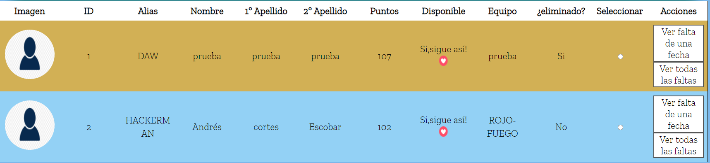
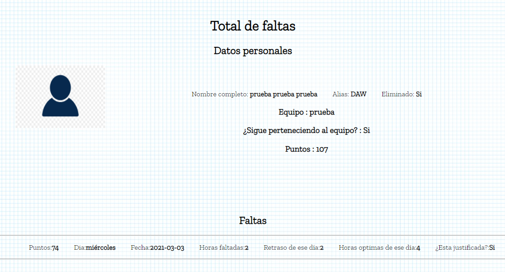
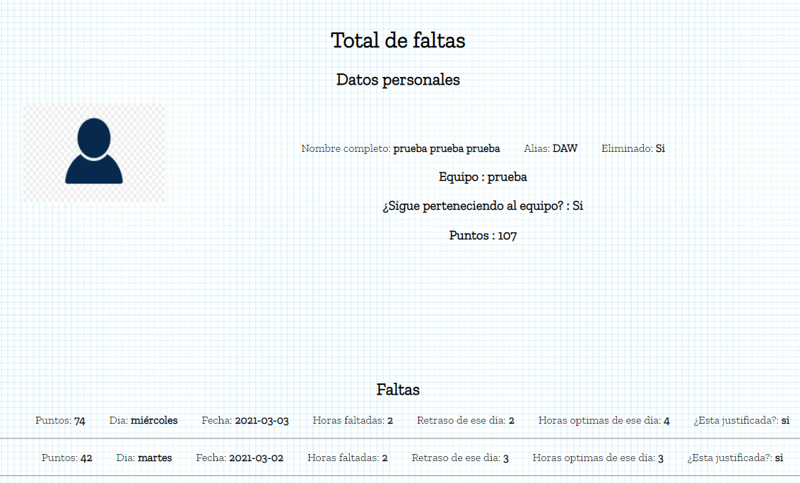

Nos vamos al menú y le damos a `ver faltas`.
Nos saldrá otra barra de búsqueda que funciona como las demás, pero en este caso tenemos un botón para ver los informes de una fecha en concreto, de todos los usuarios o podemos buscar mediante el alias o simplemente al botón de buscar y que veamos todos los empleados, si pulsamos el botón de buscar nos aparecerán los usuarios podemos seleccionar ver falta de una fecha o ver todas las faltas de empleado.

si seleccionamos 'ver faltas de una fecha' de un empleado.
Seleccionamos la fecha y le damos a enviar
Podemos ver la imagen a la izquierda, los datos personales nombre completo con sus apellidos, su alias, si esta eliminado, al equipo que pertenece, si sigue perteneciendo al equipo, puntos actuales y sus faltas, con los puntos que se quedaría actualmente, la fecha, el día ,horas faltadas, retraso de ese dia, horas optimas, y si sigue justificada.
Si seleccionamos ver todas las faltas.
Demostración del informe

Para reactivar usuario, hacemos lo mismo pero le damos al botón de reactivar usuario.